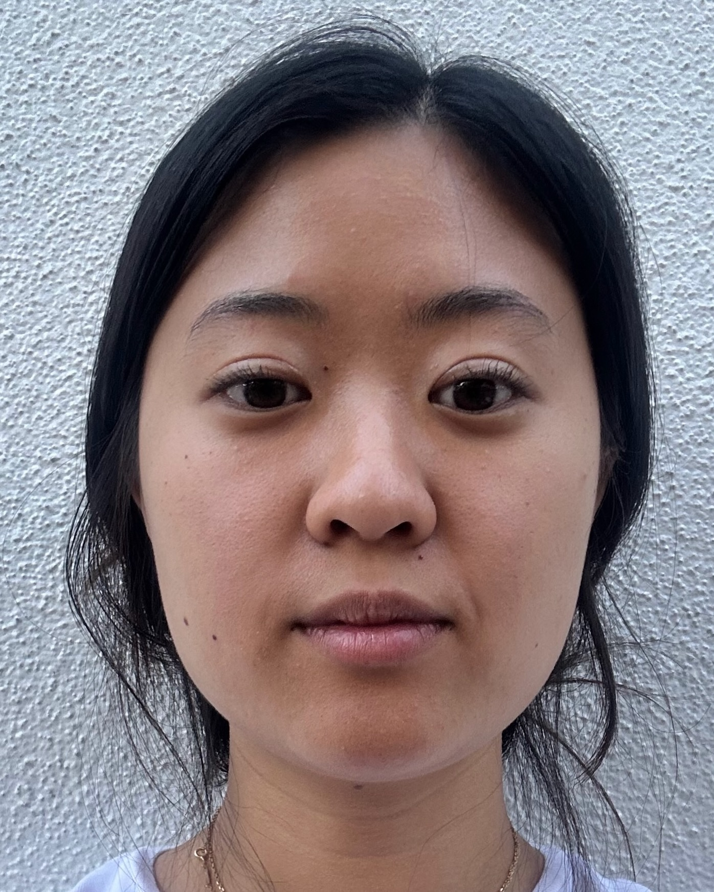
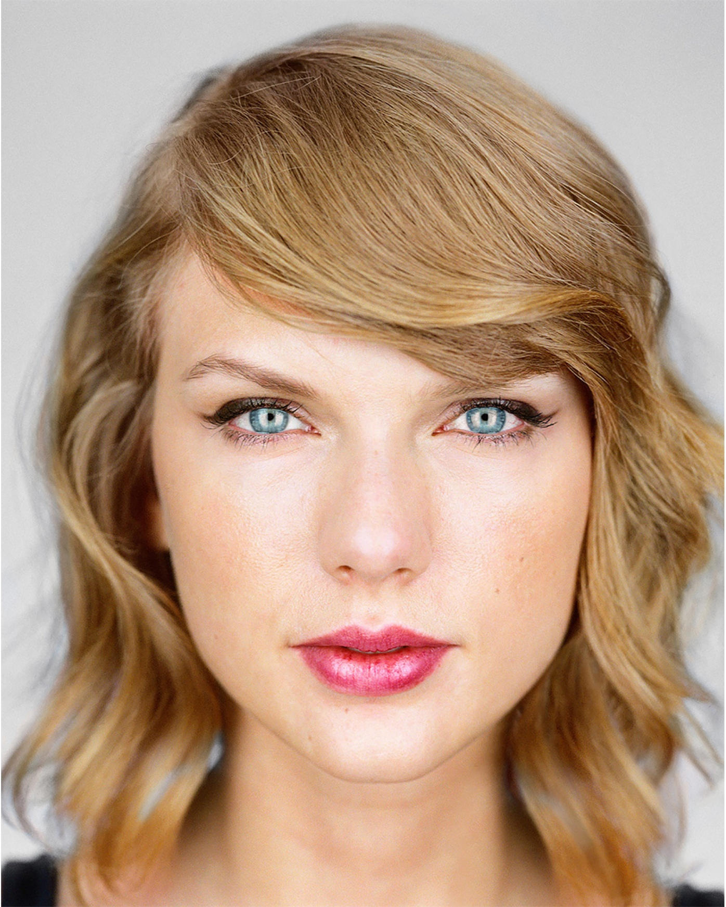
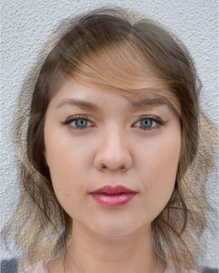
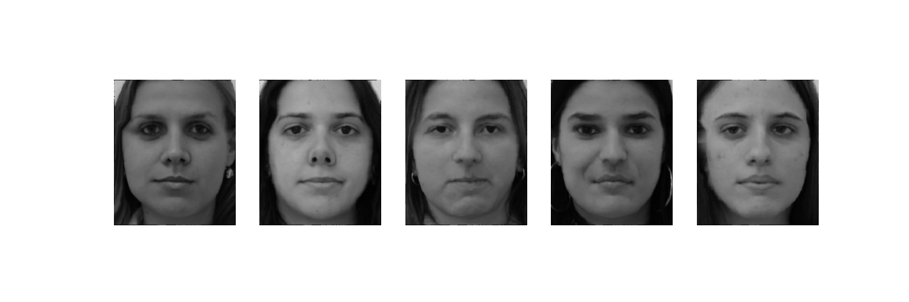
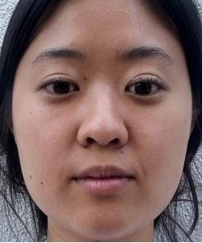
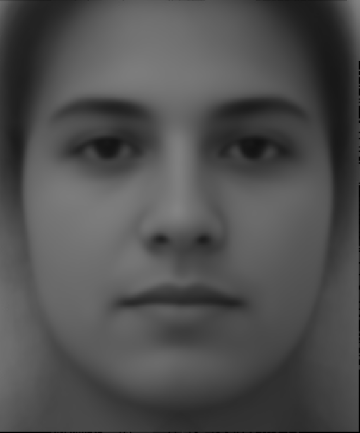
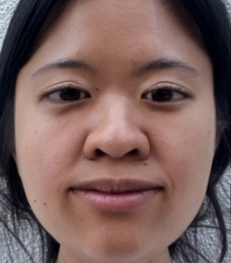
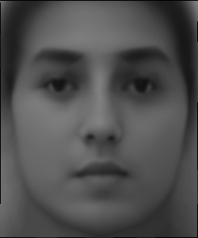

circles mark the facial landmarks.
I added boundary points at the edges of the image to my landmarks and passed the average of the two sets of landmark points into the scipy.spatial.Delaunay function to obtain the triangulations.
My selfie
Taylor Swift
Midway Face
In this part, I computed a mid-way face between my selfie and a picture of Taylor Swift. First, I computed the average shape. I averaged the landmark points of my face and Taylor Swift's face to get an intermediate shape. Second, I warped both faces to the average shape, using the affine transformations for each triangle. This involves mapping every pixel within each triangle in the original image to a corresponding pixel in the new shape. Third, I blended the colors. Once both faces were warped to the intermediate shape, I averaged their pixel values to get the mid-way face.

The morph sequence transforms between two images using the parameters warp fraction and dissolve fraction. Warp controls the shape transformation. When the warp fraction is 0, the shape corresponds to my face. When it's 1, it corresponds to Taylor Swift's face. Values in the middle give me a blend of both. Dissolve controls the blending of the pixel colors. I used linear interpolation to gradually adjust the warp and dissolve fractions to get a smooth transition from my face to Taylor's.
In this part, I computed the mean face of the FEI Face Database, which gave me 400 smiling and non-smiling images with their landmark annotations. I computed the average shape of all the faces in the dataset. Then, I warped each face in the dataset to the average shape using affine transformations. After warping, I averaged the pixel values of the warped faces to get the mean face. Next, I warped my face to the average shape of the population to see how my facial geometry aligns with the mean geometry. Finally, I warped the mean face to my own face shape geometry. I only used the non-smiling images in the dataset because my own image is non-smiling. These were easy to filter out from the dataset because all of the images came in pairs.
My Selfie (cropped and resized to match dataset)
Average face
My face warped to average geometry
Average face warped to my geometry
As instructed, I calculated caricature landmarks by extrapolating my facial landmarks away from the average shape. I used the formula CaricatureLandmarks=alpha * AverageShape + (1-alpha)* MyLandmarks with alpha below 0 or above 1. This exaggerates the difference between my face and the average face of the dataset.
I sequentially applied the morphing algorithm to a series of photos of me from young to old. It produces 46 images per transition. I added music to it using iMovie. I defined my facial landmarks using the dlib library, so I wouldn't have to do them one by one. Dlib uses ML (ie. CNNs) to detect 68 key facial landmarks on faces in an image. I previously used dlib in a past facial recognition project my freshman year at Carnegie Mellon. I thought it would be cool to reuse the library in this context.